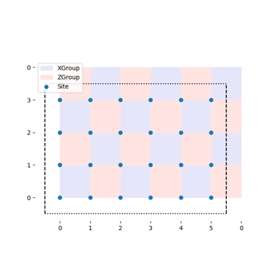
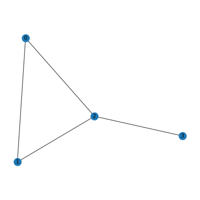
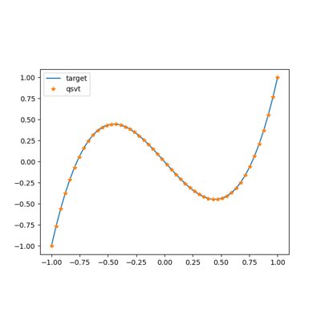
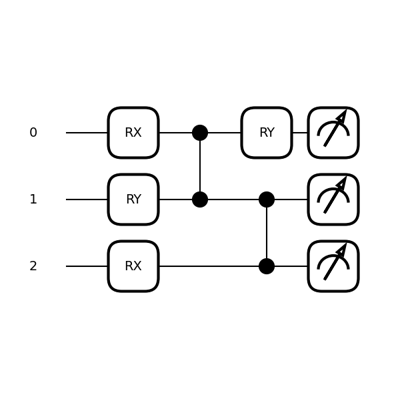
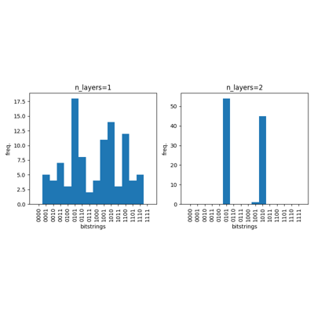
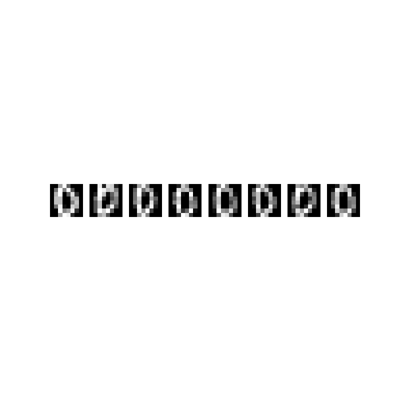
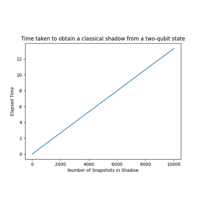

sphx_glr_demos_tutorial_toric_code.py¶





sphx_glr_demos_function_fitting_qsp.py¶






sphx_glr_demos_tutorial_quantum_circuit_cutting.py¶










Gallery generated by Sphinx-Gallery
demos/index
Download Python script
Download Notebook
View on GitHub